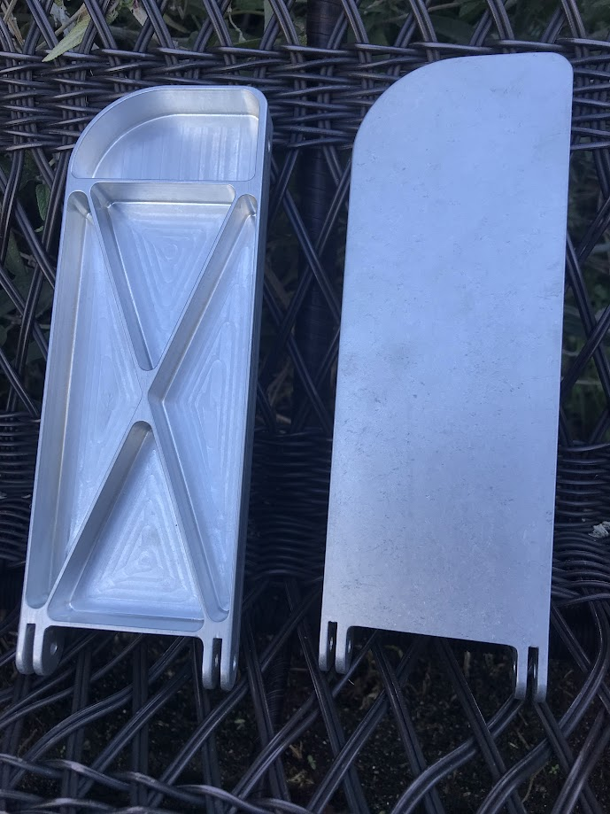
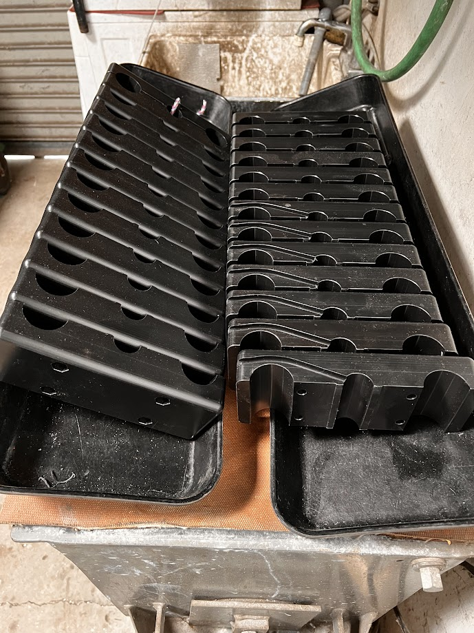
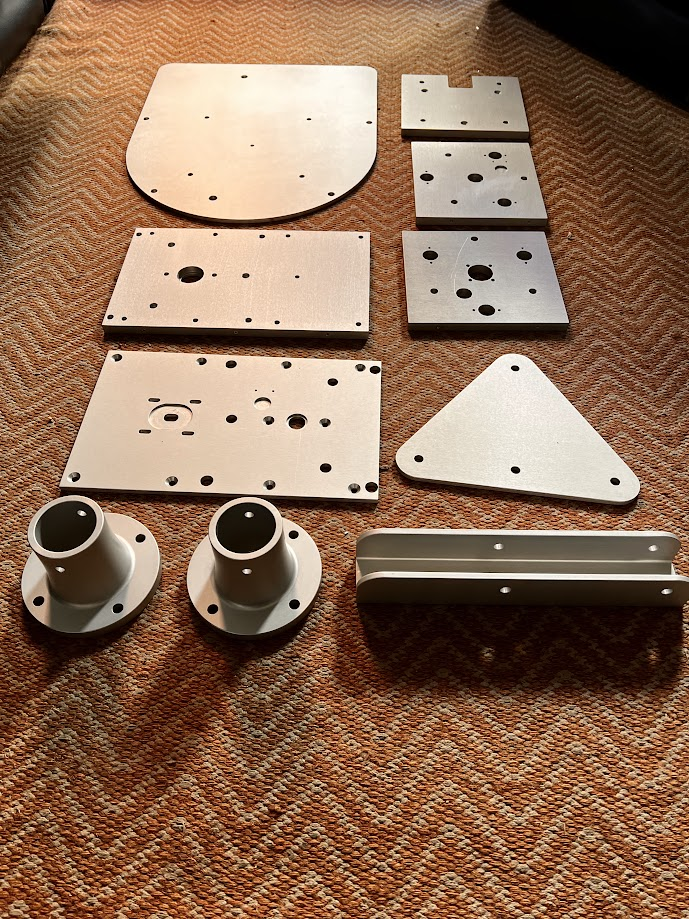
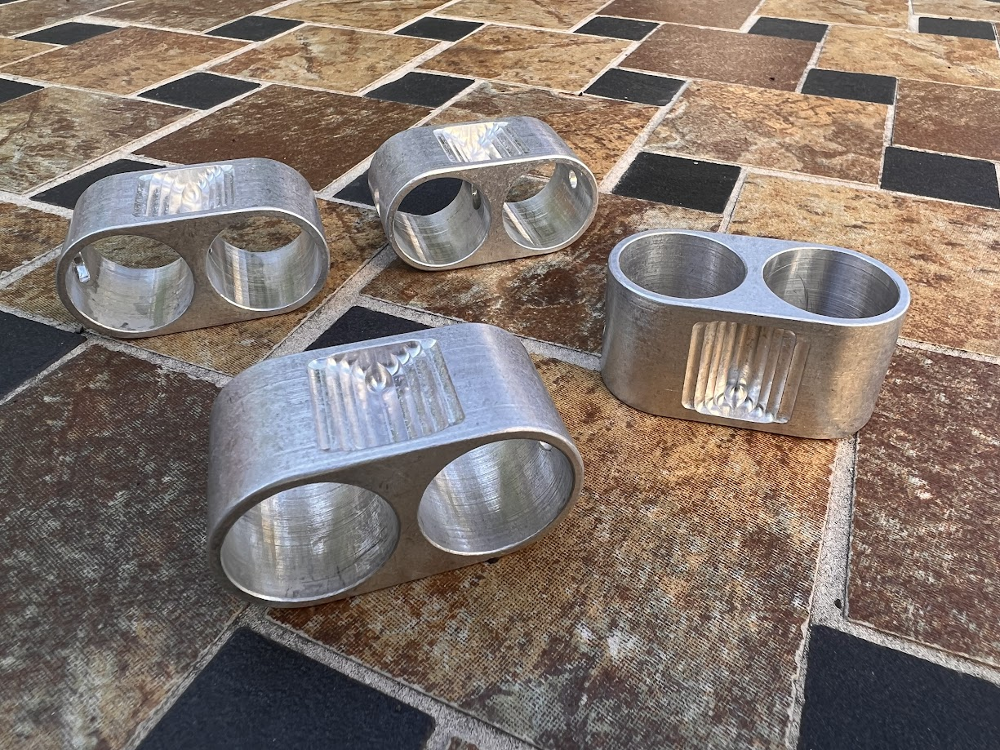

A One Man Job Shop
- CNC Machining ⚬
- Engineering ⚬
- Prototyping ⚬
- Consulting
Aeolus Machine produces prototype machines & parts for inventors and industry. Founded in 1984, Aeolus Machine uses top of the line equipment to meet individual specifications.
Floyd Fronius
San Diego, CA619-283-2336
AeolusMachine@gmail.com
- 
- 
- 
- 